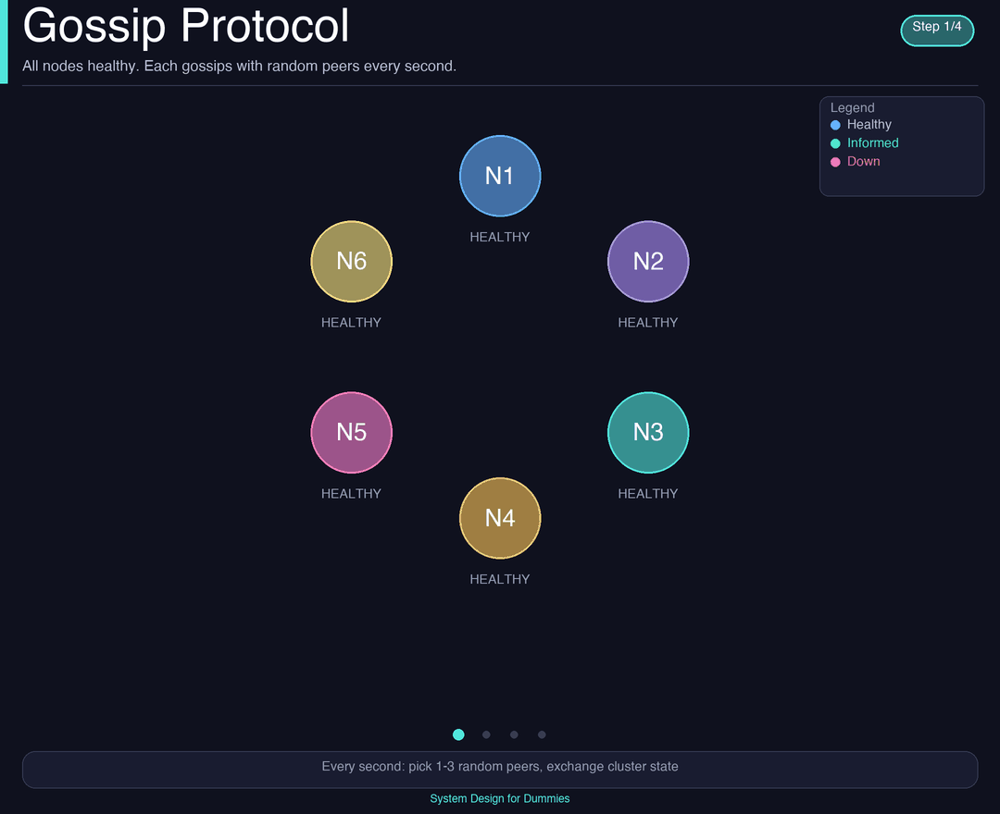

"Async replication" is the surface answer. The real answer is two layers working together: replication with repair, and gossip for coordination. Here's how rumors actually become truth in a distributed system.
Write hits Replica A. The other replicas don't have it yet.
If the only answer is "async replication", you've described what happens, not how. Real systems need repair when replication drops messages, and coordination when nodes don't know who's alive.
Eventual consistency isn't a single trick. It's a system of overlapping mechanisms that each handle one failure mode — lost writes, slow replicas, dead nodes, network partitions. Async replication is the optimistic path. Everything else is what makes the optimistic path actually converge.
Two layers work together:
The data layer. Writes fan out to replicas. Background processes (read repair, anti-entropy, hinted handoff) fix divergence when fanout fails.
The coordination layer. Nodes exchange membership, liveness, and metadata with random peers. The cluster agrees on who is in it without a master.
NoSQL systems like Cassandra and DynamoDB use tunable consistency: every read and every write specifies how many replicas must acknowledge before the operation is considered done. This is what the textbook calls "the consistency level."
The classic formula: with N replicas, W writes acknowledged, and R reads acknowledged, if W + R > N, the read is guaranteed to see the latest write. That's strong consistency. If W + R ≤ N, you might read stale data — that's eventual consistency.
A write with N=3 replicas can be configured as:
The client tunes consistency per request. A user-facing read of "did my last write happen?" might use QUORUM. A background analytics job reads with ONE for throughput. The same database supports both at the same time.
What happens to the replicas that don't ack in time? In strict synchronous systems, the write fails. In NoSQL with tunable consistency, the write succeeds as long as W replicas confirm — the rest catch up later, through the repair mechanisms below.
When a read goes to multiple replicas and they return different versions, the coordinator detects the divergence, picks the winner (usually via last-write-wins timestamps or vector clocks), and writes the correct value back to the out-of-date replica — in the background, without blocking the client.
Repair happens on the read path. Frequently-read keys converge fast. Rarely-read keys can stay diverged for a long time — which is why read repair alone isn't enough.
Cheap. Only repairs data that's actually being read. Hot keys converge quickly without any explicit maintenance.
Cold data can stay inconsistent indefinitely. If a key is never read, it's never repaired. You still need anti-entropy for full coverage.
A scheduled background job that compares full data sets between replicas. To make this efficient at terabyte scale, replicas build a Merkle tree — a hash tree where each leaf is a hash of a range of data. To compare two replicas, you compare the root hashes. If they match, you're done. If not, you recurse into the differing subtrees until you find the specific rows that differ.
This is how Cassandra's nodetool repair works. It's expensive — gigabytes of network traffic — so it's typically run weekly or after a node has been down for a long time.
Catches everything — cold keys, lost writes, bit rot, missed hints. The "ground truth" reconciliation layer.
Expensive. Can saturate the network. Must be throttled in production. If skipped for too long, tombstones can resurrect deleted data (Cassandra's "zombie" problem).
When a coordinator tries to write to a replica that's temporarily down, it doesn't drop the write. It stores a hint — a sticky note that says "deliver this write to node X when X comes back." When the failed node returns, the coordinator replays all queued hints.
Hinted handoff is what lets a write succeed at QUORUM even when one of the three replicas is briefly unreachable. It's the bridge between "the write is acknowledged" and "the write is on all replicas."
Keeps availability high during short outages. Replicas catch up automatically without needing a full anti-entropy run.
Hints are bounded in size and time (Cassandra defaults: 3 hours). If a node is down longer, hints are dropped — and you must run anti-entropy to recover.
How they layer: Hinted handoff handles seconds-to-minutes outages. Read repair handles divergence on hot keys. Anti-entropy is the safety net for everything else — cold keys, dropped hints, long outages. Production systems need all three.

Each second, every node picks a random peer and exchanges state. The cluster converges in O(log N) rounds.
In a cluster of 1,000 nodes, no single node can ping all others every second — the traffic would scale O(N²). Gossip solves this by having each node talk to just 2–3 random peers per round. State propagates exponentially, the same way a rumor spreads through a crowd.
Each second, every node:
1. Picks a few random peers from its known list.
2. Sends them its current view of cluster state — node IDs, generation numbers, heartbeats, schema versions.
3. Receives their view in return.
4. Merges the two views, taking the latest version per node (typically by version number).
After a few rounds, every node has the same view. Convergence is O(log N) — in a 1,000-node cluster, the whole thing knows within ~10 rounds (~10 seconds).
What gossip carries (and what it doesn't):
| Gossip Carries | Gossip Does NOT Carry |
|---|---|
| Node membership (who's in the cluster) | Your actual data rows |
| Liveness / heartbeats (who's alive) | Read/write traffic |
| Token ownership (which keys go where) | Query results |
| Schema versions, datacenter info | Replication itself |
Gossip doesn't replicate data — it keeps nodes informed. Replication carries data. Gossip carries the map of where data lives.
Failure detection — the phi accrual detector: Instead of a simple "missed 3 heartbeats → dead," Cassandra uses an accrual failure detector. It tracks the distribution of heartbeat intervals from each peer and computes a continuous "phi" value — the suspicion level. The longer a heartbeat is overdue relative to history, the higher phi climbs. The application decides at what phi threshold to treat the node as down. This is far more robust than fixed timeouts on a noisy network.
Follow-up questions to expect:
You can read stale data. Acceptable for analytics, view counts, recommendations. Not for "did my payment go through?"
Last-write-wins (timestamps), vector clocks (track causality), or CRDTs (mergeable types). Pick based on the data model.
Single point of failure. Doesn't scale across regions. Gossip is decentralized — any node can join or leave without coordination.
Bad for: balances, inventory, uniqueness constraints. Good for: feeds, counters, leaderboards, session data, analytics.
W + R > N gives you strong consistency. W + R ≤ N gives you availability. The same database supports both, per request.
Hinted handoff for short outages. Read repair for hot keys. Anti-entropy for cold keys and long outages. All three or it doesn't converge.
Gossip carries metadata: membership, liveness, token ownership. It enables replication at scale. It is not replication itself.
"Eventually consistent" doesn't mean magic. It means four mechanisms working in concert, each compensating for one type of failure.